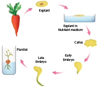
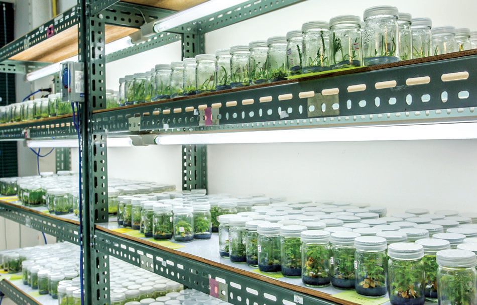
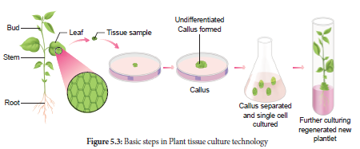
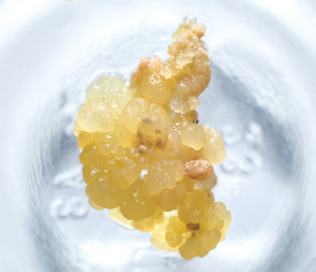
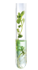

5.1 Basic concepts in plant disuse culture
5.2 Plant tissue culture techniques and types
5.3 Plant regeneration pathway
5.4 Applications of plant tissue culture
5.5 Conservation of plant genetic resources
5.6 Intellectual rights of property OPEN BRACKET IPR CLOSE BRACKET, Biosafety and Bioethics
5.7 Future Biotechnology
Gottlieb Haberlandt
Growing plant protoplasts, cells, tissues or organs away from their natural or normal environment, under artificial condition, is known as Tissue Culture. It is also known as in vitro OPEN BRACKET In vitro is a Latin word, it means that - in glass or in test-tube CLOSE BRACKET growth of plant protoplasts, cells, tissues and organs.
A single explant can be multiplied into several thousand plants in a short duration and space under controlled conditions.
Tissue culture techniques are often used for commercial production of plants as well as for plant research. Plant tissue culture serves as an indispensable tool for regeneration of transgenic plants. Apart from this some of the main applications of Plant tissue culture are clonal propagation of elite varieties, conservation of endangered plants, production of virus-free plants, germplasm preservation, industrial production of secondary metabolites. etc., In this chapter let us discuss the history , techniques, types , applications of plant tissue culture and get awareness on ethical issues.
Gottlieb Haberlandt OPEN BRACKET 1902 CLOSE BRACKET the German Botanist proposed the concept Totipotency and he was also the first person to culture plant cells in artificial conditions using the mesophyll cells of Lamium purpureum in culture medium and obtained cell proliferation. He is regarded as the father of tissue culture.
Basic concepts of plant tissue culture are totipotency, differentiation, dedifferentiation and redifferentiation.
The property of live plant cells that they have the genetic potential when cultured in nutrient medium to give rise to a complete individual plant.

Figure 5.1: Totipotency
The process of biochemical and structural changes by which cells become specialized in form and function.
The further differentiation of already differentiated cell into another type of cell. For example, when the component cells of callus have the ability to form a whole plant in a nutrient medium, the phenomenon is called redifferentiation.
The phenomenon of the reversion of mature cells to the meristematic state leading to the formation of callus is called dedifferentiation. These two phenomena of redifferentiation and dedifferentiation are the inherent capacities of living plant cells or tissue. This is described as totipotency.
Plant tissue culture is used to describe the in vitro and aseptic growth of any plant part on a tissue culture medium. This technology is based on three fundamental principles:
The plant part or explant must be selected and isolated from the rest of plant body.
The explant must be maintained in controlled physically OPEN BRACKET environmental CLOSE BRACKET and chemicallydefined OPEN BRACKET nutrient medium CLOSE BRACKET conditions.
The tissue taken from a selected plant transferred to a culture medium often to establish a new plant.
For PTC, the laboratory must have the following facilities:

Figure 5.2: Tissue culture lab
Washing facility for glassware and ovens for drying glassware.
Medium preparation room with autoclave, electronic balance and pH meter.
Transfer area sterile room with laminar air-flow bench and a positive pressure ventilation unit called High Efficiency Particulate Air OPEN BRACKET HEPA CLOSE BRACKET filter to maintain aseptic condition.
Culture facility: Growing the explant inoculated into culture tubes at 22 to 28 degree celcius with illumination of light 2400 lux, with a photoperiod of 8 to 16 hours and a relative humidity of about 60 percentage.
Sterilization is the technique employed to get rid of microbes such as bacteria and fungi in the culture medium, vessels and explants.
During in vitro tissue culture maintenance of aseptic environmental condition should be followed, that is, sterilization of glassware, forceps, scalpels, and all accessories in wet steam sterilization by autoclaving at 15 psi OPEN BRACKET 121 degree celcius CLOSE BRACKET for 15 to 30 minutes or dipping in 70 percentage ethanol followed by flaming and cooling.
Floor and walls are washed first with detergent and then with 2 percentage sodium hypochlorite or 95 percentage ethanol. The cabinet of laminar airflow is sterilized by clearing the work surface with 95 percentage ethanol and then exposure of UV radiation for 15 minutes
Culture media are dispensed in glass containers, plugged with non-absorbent cotton or sealed with plastic closures and then sterilized using autoclave at 15 psi OPEN BRACKET 121°C CLOSE BRACKET for 15 to 30 minutes. The plant extracts, vitamins, amino acids and hormones are sterilized by passing through Millipore filter with 0.2 mm pore diameter and then added to sterilized culture medium inside Laminar Airflow Chamber under sterile condition.
The plant materials to be used for tissue culture should be surface sterilized by first exposing the material in running tap water and then treating it in surface sterilization agents like 0.1 percentage mercuric chloride, 70 percentage ethanol under aseptic condition inside the Laminar Air Flow Chamber.

The success of tissue culture lies in the composition of the growth medium, plant growth
regulators and culture conditions such as temperature, pH, light and humidity. No single medium
is capable of maintaining optimum growth of all plant tissues. Suitable nutrient medium as per the principle of tissue culture is prepared and used.
MS nutrient medium OPEN BRACKET Murashige and Skoog 1962 CLOSE BRACKET is commonly used. It has carbon sources, with suitable vitamins and hormones. The media formulations available for plant tissue culture other than MS are B5 medium OPEN BRACKET Gamborg.et.al 1968 CLOSE BRACKET, White medium OPEN BRACKET white 1943 CLOSE BRACKET, Nitsch’s medium OPEN BRACKET Nitsch & Nitsch 1969 CLOSE BRACKET. A medium may be solid or semisolid or liquid. For solidification, a gelling agent such as agar is added.
Agar:
A complex mucilaginous polysaccharide obtained from marine algae OPEN BRACKET sea weeds CLOSE BRACKET used as
solidifying agent in media preparation.
The pH of medium is normally adjusted between 5.6 to 6.0 for the best result.
The cultures should be incubated normally at constant temperature of 25 degree celcius for optimal growth.
The cultures require 50 to 60 percentage relative humidity and 16 hours of photoperiod by the illumination
of cool white fluorescent tubes of approximately 1000 lux.
Aeration to the culture can be provided by shaking the flasks or tubes of liquid culture on automatic shaker or aeration of the medium by passing with filter-sterilized air.

Figure 5.4: Induction of callus
Explant of 1 to 2 cm sterile segment selected from leaf, stem, tuber or root is inoculated OPEN BRACKET transferring the explants to sterile glass tube containing nutrient medium CLOSE BRACKET in the MS nutrient medium supplemented with auxins and incubated at 25 degree celcius in an alternate light and dark period of 12 hours to induce cell division and soon the upper surface of explant develops into callus. Callus is a mass of unorganized growth of plant cells or tissues in in vitro culture medium.
The callus cells undergoes differentiation and produces somatic embryos, known as Embryoids. The embryoids are sub-cultured to produce plantlets.

Figure 5.5: Embryogenesis
The plantlets developed in vitro require a hardening period and so are transferred to greenhouse or hardening chamber and then to normal environmental conditions. Hardening is the gradual exposure of in vitro developed plantlets in humid chambers in diffused light for acclimatization so as to enable them to grow under normal field conditions.
Based on the type of explants other plant tissue culture types are
1. Organ culture